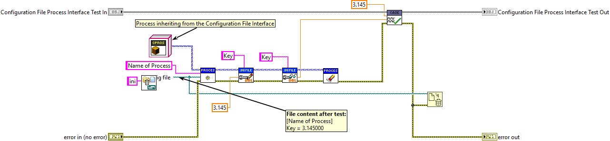
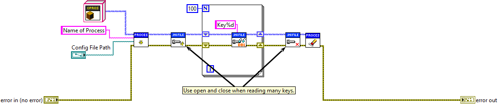

Configuration Management
Configuration management is common in most software system and test systems are no exception, quite the contrary. It is useful to separate out parameters, which are to be editable after the system has been built and deployed, and manage these parameters outside the source. Because configuration management is so central to most test systems, the Triarc Framework provides a framework for managing configurations.
Configurations may be stored in any conceivable format, and one common implementation is to use human readable text files.
LabVIEW comes with built in functions for editing key-value pairs in windows style .ini text files.
Another common practice is to use the windows registry or a database for storing configurations.
Triarc Configuration Interface
The Configuration interface defines abstract methods for writing and reading configuration data. The implementation may be using any persistance technology. This is useful, as an in-memory implementation may be used for testing purposes of as a property object carrying configuration data.
Triarc Configuration File Interface
A common way of persisting configurations is to use human readable flat text files. This works well in many cases and text files are easy to manage and version control.
Triarc Framework provides the boiler plate for using configuration files to manage configurations. The API is shown in the test case below and the configurations are written to the text file.

The Base.lvclass implements the boiler plate code for carrying the reference to the file.
The Configuration File API implementation is designed to be thread safe and is optimized for reading. This means that many processes may read from and write to the same configuration file without race conditions. This is done by only allowing one process to write to the configuration file at the same time.
If many keys are to be read from the configuration file sequentially, the Open Config.vi and Close Config.vi methods shoule be used to reduce over head of opening and closing the reference for each read, as shown below.

Practices and antipatterns
There are a few pitfalls to be aware of when working with configurations and these are often overlooked. The following section assumes that configurations are stored in a file, but the same applies regardless of storage technology.
Configuration Data is Global
As configurations are stored in one (or potentially many) text file, any part of the applications which can find the file and parse it will be able to access the configuration information. This implies that there is an inherit risk for race conditions and care should be taken whenever a configuration is updated.
In TF the configuration management functions ensures that each process can only access its own section of the configuration file.
In this way the risk for race conditions are reduced.
Race Conditions
If a reference is opened for writing in many multiple places concurrently, there is a risk for race conditions to occur.
This is as the last process which closes the file will overwrite the previous writes since it opened the reference to the file.
As mentioned earlier, this is handled by TF as synchronization mechanisms is implemented to only allow a single process to open the file for writing.
Default Values
If a key is not found, the LabVIEW native configuration file functions returns a default value, which may be set by the developer. If a key is e.g. misspelled in the file, a user of the system will not get any kind of feedback on what the system is expecting from the configuration file and may cause a lot of pain.
To mittigate this, TF will write the default value to the configuration file if the key was not found.
By doing this, missing keys will be added to the file and if the file is missing all together a file with default configurations will be created automatically.
Lack of structure
Using LabVIEW native configuration file methods puts the responsibility on the developer to use reasonable sections when saving configuration data. This often leads to a structure that degrades over time as more fields are added.
TF enforces a structure on the configuration file, as data is modelled in such a way that each process has its own section.
If, as an example, two instances of a process are used to interract with two hardware devices, each instance will have its own section named after the process.
In this way the two hardware devices can be configured independently and the only action needed by the developer is to ensure that they are named uniquely.